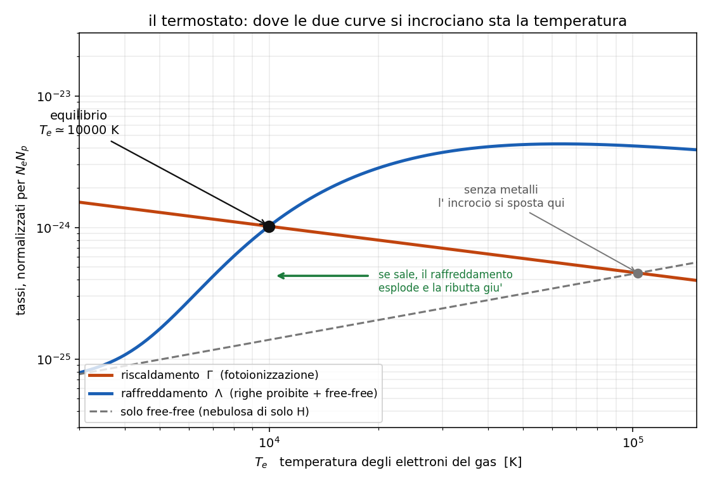

9 - Equilibrio termico: chi scalda e chi raffredda
Dispensa: cap. 9 (pag. 111 e seguenti).
Capitolo in PODS: si parte da una domanda che sembra ingenua (perche' non si scalda
all' infinito?) e si finisce con un grafico che spiega tutto il corso.
Ultimo capitolo, e chiude un cerchio. Per tutto il corso si e' detto "una nebulosa sta a $10^4$ K"
e lo si e' usato per fare i conti. Adesso si spiega perche' ci sta.
La domanda e':
la stella pompa energia nella nebulosa in continuazione. Perche' allora non si scalda
all' infinito?
1. L'equazione
Perche' due processi opposti si pareggiano:
$$\Gamma = \Lambda$$
$\Gamma$ $\quad$ tasso di riscaldamento: energia data al gas per unita' di volume e di tempo,
in erg cm$^{-3}$ s$^{-1}$
$\Lambda$ $\quad$ tasso di raffreddamento, stesse unita'
La temperatura si assesta al valore in cui i due si eguagliano. Ed e' il motivo per cui tutte
le nebulose fotoionizzate stanno intorno a $10^4$ K, indipendentemente da quanto e' grande la
stella che le illumina.
2. Chi scalda: la fotoionizzazione
Il capo assoluto e' la fotoionizzazione, ed e' facile da capire.
Arriva un fotone stellare con energia sopra la soglia, diciamo 20 eV. Ne spende 13.6 per strappare
l' elettrone, e i 6.4 eV che avanzano se li porta via l' elettrone come energia cinetica.
Quell' elettrone poi sfreccia in giro, urta gli altri, e distribuisce l' energia a tutto il gas.
Il gas si scalda.
$$\bar{E}_e = \frac{\int_{\nu_0}^{\infty} h(\nu - \nu_0) \frac{k_\nu I_\nu}{h\nu} d\nu}{\int_{\nu_0}^{\infty} \frac{k_\nu I_\nu}{h\nu} d\nu}$$
$\bar{E}_e$ $\quad$ energia cinetica media del singolo elettrone liberato
$h(\nu - \nu_0)$ $\quad$ l' energia in eccesso sulla soglia, quella che finisce all' elettrone
$\frac{k_\nu I_\nu}{h\nu}$ $\quad$ il numero di fotoionizzazioni per unita' di volume e di tempo
Cioe': e' la media dell' energia in eccesso, pesata su quante fotoionizzazioni avvengono a ogni
frequenza.
2.1 La cosa importante di questa formula
Guarda cosa c'e' sopra e sotto: $I_\nu$ compare in tutti e due, e si semplifica.
$\bar{E}_e$ dipende dallo spettro della stella, non dalla sua intensita'.
Vuol dire che una stella lontana o vicina scalda gli elettroni allo stesso modo: cambia quanti
ne libera, non quanto energetici sono. Quello che conta e' la temperatura della stella, che
decide la forma dello spettro.
Vicino alla stella, con l' approssimazione di Wien, viene:
$$\bar{E}_e = \psi_0 k_B T$$
con $\psi_0$ dell' ordine di 1 (e $T$ e' la temperatura della stella, non del gas).
2.2 Un effetto di indurimento
Siccome $k_\nu \propto \nu^{-3}$ (vedi la capitolo 7), i fotoni
piu' energetici attraversano la nube senza essere assorbiti, mentre quelli appena sopra soglia
vengono mangiati subito.
Conseguenza: piu' ci si allontana dalla stella, piu' gli elettroni liberati escono energetici,
perche' li' arrivano solo i fotoni duri.
2.3 Il bilancio netto
Il riscaldamento vero non e' tutta l' energia che entra: bisogna togliere quella che se ne va con le
ricombinazioni, perche' l' elettrone catturato si porta via la sua energia cinetica.
$$\Gamma_{ph} = N_1 N_e \left[ \alpha_0 \bar{E}_e - \frac{1}{2} m_e \langle \sigma_{fb} v^3 \rangle \right]$$
Il primo pezzo e' quello che entra, il secondo quello che esce.
E qui torna il risultato del capitolo 7: $\sigma_{fb}$ cala al crescere
di $v$, quindi a farsi catturare sono soprattutto gli elettroni lenti. Entrano elettroni
veloci ed escono elettroni lenti: il bilancio e' positivo, il gas si scalda.
2.4 Gli altri canali (minori)
- ionizzazione di H I da raggi cosmici
- effetto fotoelettrico sulla superficie dei grani di polvere
- evaporazione di molecole H$_2$ dai grani
3. Chi raffredda: le righe proibite dei metalli
E qui si capisce perche' il capitolo 5.7 era cosi' importante.
Il meccanismo, in tre passi:
- un elettrone libero urta uno ione dei metalli (O, N, S) e lo porta su un livello
metastabile poco sopra il fondamentale. Quell' urto toglie energia cinetica al gas. - lo ione decade ed emette un fotone.
- la nebulosa e' otticamente sottile a quella riga, quindi il fotone se ne va portandosi
dietro l' energia.
Netto: quell' energia il gas non se la riprende piu'.
3.1 Perché sono i metalli e non l'idrogeno
Questa e' la domanda giusta da farsi, e la risposta e' un confronto fra due numeri.
A $10^4$ K gli elettroni hanno $k_B T_e = 0.86$ eV.
| specie | primo livello raggiungibile | ci arrivano? |
|---|---|---|
| idrogeno | 10.2 eV | no, mai |
| [O III], [N II], [S II] | 2-5 eV | si' |
L' idrogeno e' fuori portata: per eccitarlo servirebbero elettroni dodici volte piu' energetici
della media, e la coda della maxwelliana non ne fornisce abbastanza.
I metalli invece hanno i livelli metastabili a pochi eV, per il motivo visto nel
capitolo 5.7 (stessa configurazione elettronica del fondamentale).
Nota subito così de botto: fa una certa impressione. I metalli sono una traccia, tipo un
atomo su diecimila. Eppure sono loro a fissare la temperatura di tutta la nebulosa, perche' sono
gli unici che gli elettroni riescono a eccitare. La roba che c'e' in abbondanza non serve a niente
se sta troppo in alto.
3.2 La formula
$$\Lambda_{coll} = N_e \sum_m (E_m - E_1)(N_{i1} Q_{1m} - N_{im} Q_{m1})$$
$(E_m - E_1)$ $\quad$ l' energia del salto fondamentale -> metastabile
$N_{i1} Q_{1m}$ $\quad$ le eccitazioni: energia tolta al gas
$N_{im} Q_{m1}$ $\quad$ le diseccitazioni collisionali: energia restituita al gas
Il secondo termine e' quello che rovina tutto quando la densita' e' alta. Se ne parla fra due
paragrafi.
Per [O III] 5007, mettendo dentro i numeri:
$$\Lambda \simeq 1.57 \times 10^{-21} N_e N_p \frac{e^{-2.877 \times 10^4 / T_e}}{\sqrt{T_e}}$$
Il pezzo che conta e' quell' esponenziale. $2.877 \times 10^4$ K e' $\Delta E / k_B$ della riga
5007. Il raffreddamento e' spento a bassa temperatura e si accende di colpo quando $T_e$ si
avvicina a quella soglia.
3.3 Gli altri canali di raffreddamento
Free-free (bremsstrahlung, vedi capitolo 6):
$$\Lambda_{ff} \propto N_e N_p \sqrt{T_e}$$
Va come $\sqrt{T_e}$, quindi cresce piano, senza soglie e senza esponenziali. E' il
raffreddamento dominante in una nebulosa di solo idrogeno, dove non ci sono metalli.
Ricombinazione: l' elettrone catturato si porta via la sua energia cinetica. E' gia' contato
dentro $\Gamma_{ph}$ col segno meno.
Collisioni con i grani di polvere.
4. Il termostato
Adesso il pezzo che spiega tutto, ed e' un grafico da saper disegnare.
Si mettono in scala logaritmica i due tassi (normalizzati per $N_e N_p$) in funzione di $T_e$:
sull' asse X: $T_e$, la temperatura degli elettroni del gas
sull' asse Y: i tassi $\Gamma$ e $\Lambda$
E le due curve hanno forme molto diverse:
- $\Gamma_{ph}$ e' quasi piatta, anzi cala piano. Il motivo e' il punto 2.1: l' energia che il
fotone regala all' elettrone la decide la stella, e la temperatura del gas non c' entra
niente. - $\Lambda$ sale, e quella collisionale sale ripidissima, per via dell' esponenziale
$e^{-\Delta E / k_B T_e}$.
Dove le due curve si incrociano c'e' la temperatura di equilibrio.
4.1 Perché è un termostato vero
Guarda cosa succede se ci si sposta dall' incrocio:
- $T_e$ sale sopra: il raffreddamento esplode (esponenziale) mentre il riscaldamento resta
quello -> la temperatura viene ributtata giu' - $T_e$ scende sotto: il raffreddamento si spegne di colpo mentre il riscaldamento continua ->
la temperatura risale
E' un equilibrio stabile, e si autoregola. Per questo tutte le nebulose con metalli finiscono
intorno a $10^4$ K.

4.2 Una nebulosa di solo idrogeno
Caso limite da tenersi in tasca, perche' fa vedere quanto contano i metalli.
Senza metalli non c'e' il raffreddamento collisionale: resta solo il free-free, che va come
$\sqrt{T_e}$ ed e' molto meno efficiente.
La curva di $\Lambda$ e' molto piu' bassa e molto meno ripida, quindi l' incrocio si sposta a
temperature nettamente piu' alte.
Detto altrimenti: sono i metalli a tenere fredde le nebulose.
5. Il legame col quenching
Torna il capitolo 5, e stavolta con una conseguenza grossa.
la riga raffredda solo se il fotone esce.
Se la densita' supera $N_c$, lo ione eccitato viene spento da un secondo urto prima di riuscire
a emettere: l' energia torna all' elettrone che lo ha urtato e resta dentro il gas.
Quindi: sopra la densita' critica, quel canale di raffreddamento si spegne, e la temperatura di
equilibrio sale.
E' il termine $N_{im} Q_{m1}$ della formula al punto 3.2: sotto $N_c$ e' trascurabile, sopra $N_c$
cresce fino a cancellare quasi del tutto il primo pezzo.
6. E se la stella si spegne di colpo?
Domanda che chiude bene il corso, perche' obbliga a usare tutto quello che si e' visto.
Succede questo: la nebulosa si raffredda, tutto ricombina, righe e continuo spariscono, e nel
visibile non la vedi piu' (ma e' ancora li': va cercata a lunghezze d' onda maggiori).
Quanto ci mette? Si divide l' energia termica che c'e' da smaltire per il tasso a cui la si smaltisce:
$$t_c = \frac{\frac{3}{2} k_B T N_p}{\Lambda}$$
Coi numeri di una nebulosa a $10^4$ K:
$$t_c \sim \frac{10^{12}}{N_p} \; \text{s}$$
Con $N_p = 10^2$ cm$^{-3}$: circa 300 anni. In una nebulosa di solo idrogeno, dove raffredda
solo il free-free, ci mette circa dieci volte tanto.
6.1 Il tempo di ricombinazione
L' altro tempo caratteristico e':
$$t_r = \frac{1}{N_e \alpha_0}$$
Con gli stessi numeri viene circa 800 anni.
In pratica: tutti e due i tempi vanno come $1/N$. Quindi piu' e' densa la
nebulosa, piu' in fretta si spegne. E' lo stesso motivo di sempre: le cose succedono per
incontri, e in un gas denso ci si incontra piu' spesso.
7. In breve
- la temperatura sta ferma perche' $\Gamma = \Lambda$, ed e' per questo che tutte le nebulose
fotoionizzate stanno a $\sim 10^4$ K - scalda la fotoionizzazione: l' energia in eccesso sopra la soglia se la porta via l' elettrone
come energia cinetica - $\bar{E}_e$ dipende dallo spettro della stella, non dalla sua intensita' (si semplifica)
- raffreddano le righe proibite dei metalli eccitate per urto: l' urto ruba energia al gas e il
fotone la porta fuori - sono i metalli perche' a $k_BT_e = 0.86$ eV i loro livelli metastabili (2-5 eV) sono
raggiungibili e i 10.2 eV dell' idrogeno no - il grafico: $\Gamma$ quasi piatta, $\Lambda$ che sale ripida per l' esponenziale, e
l' incrocio fissa $T_e$ - e' un equilibrio stabile: se $T_e$ sale il raffreddamento esplode, se scende si spegne
- in una nebulosa di solo H raffredda solo il free-free, molto meno efficiente ->
temperatura di equilibrio piu' alta - quenching: sopra $N_c$ il fotone non esce, l' energia resta nel gas, quella riga non
raffredda piu' e la temperatura sale
Domande tattiche
1. Una nebulosa viene scaldata in continuazione dalla stella. Perche' non arriva a un milione
di gradi? (-> sezioni 1 e 4.1)
2. I metalli sono un atomo su diecimila, eppure sono loro a decidere la temperatura. Come si
spiega? Il confronto e' fra due numeri soli. (-> sezione 3.1)
3. L' energia che il fotone regala all' elettrone dipende da quanto e' vicina la stella?
(-> sezione 2.1)
4. Disegna il grafico del termostato: cosa metti sui due assi, che forma hanno le due curve, e
perche' proprio quelle forme? (-> sezione 4)
5. Prendi una nebulosa e alza la densita' sopra la densita' critica di [O III]. La temperatura
di equilibrio sale o scende? Fai il percorso completo. (-> sezione 5)
6. In una nebulosa di solo idrogeno la temperatura di equilibrio e' piu' alta o piu' bassa che
in una coi metalli? E chi raffredda, li'? (-> sezione 4.2)
7. La stella si spegne di colpo. Cosa vedi succedere, e in quanto tempo? E la nebulosa piu'
densa si spegne prima o dopo? (-> sezioni 6 e 6.1)